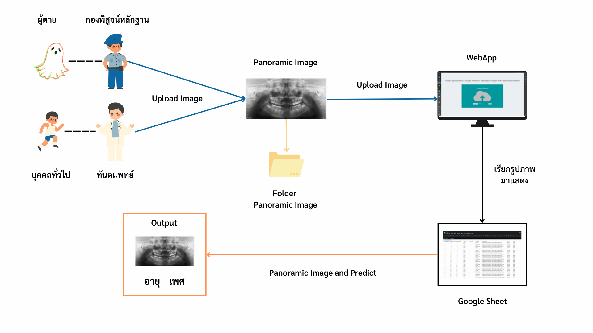

Human Age Estimation Through Panoramic Radiographs Images
With Deep Neural Network
Example Results: WebApp(Prototype)
Input-output
Abstract

Estimating dental age in children and adolescents is important for diagnostic planning.
Dental and orthodontic treatment, especially in persons of biological age. And physiological
age inconsistencies. Age estimation is also part of the forensic approach. For age prediction
in the case of refugees, child molesting Age fake Age estimation is therefore important for
the deceased person. Living persons, children, adolescents, and adults, as well as the
identity of a living or deceased person, must be identified to raise legal suspicions. Estimating
human age from panoramic radiographs is difficult and requires considerable expertise in
dentistry. Nowadays, AI is increasingly used in medicine because it is faster, more accurate,
and more precise than humans can be.
The developer has developed a system for determining the age of humans from
panoramic radiographs. The development team has used deep learning to help develop a
model that will be used in the panoramic radiographic human age detection system to
achieve the highest accuracy. It is also a time-saving tool. And reduce dental errors.
This research aims to develop a web application to check out the human in panoramic photos.
Research Benefits The estimation of human age through panoramic X-ray images
using deep learning techniques is intended to help understand the tooth structure of people
of different sexes and age ranges, and this web application will be a tool for that.
That saves time and reduces dentist errors as well.
Project poster
The website template was borrowed from Michaël Gharbi.